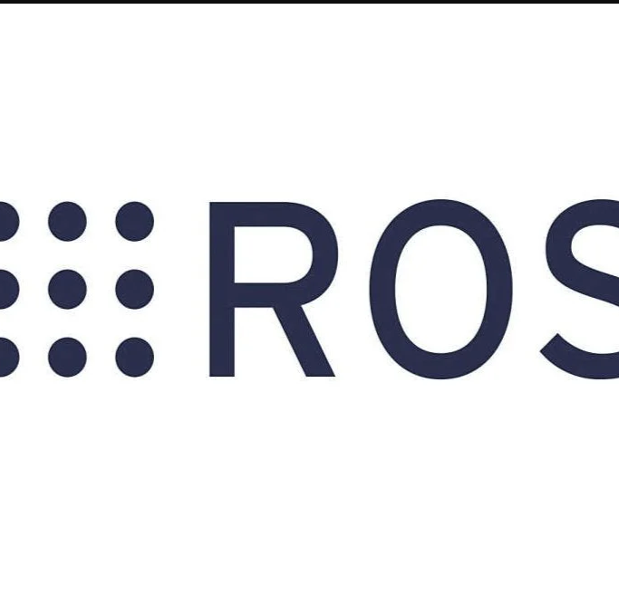

SCARA Robot with ROS2
View Code ↗As part of my advanced robotics work at Esforge Pvt Ltd, I led the development of a SCARA Robot integrated with ROS2, showcasing my expertise in robotic operating systems, motion planning, and embedded systems. This project demonstrated my ability to design, simulate, and deploy a high-precision robotic arm for industrial automation tasks.
Project Overview
The SCARA (Selective Compliance Assembly Robot Arm) was developed to perform precise pick-and-place operations for industrial automation, capable of achieving a repeatability of ±0.1 mm. The robot was controlled using ROS2, enabling modular, scalable, and real-time robotic control. The system was designed to handle tasks such as assembly, material handling, and precision placement, with seamless integration of hardware and software components.
System Architecture
The SCARA robot utilized a STM32 microcontroller as the primary controller for low-level motor control and sensor interfacing, interfaced with a Raspberry Pi running ROS2 for high-level control and communication. The STM32 handled real-time tasks such as motor control and encoder feedback, while the Raspberry Pi managed ROS2 nodes for motion planning, trajectory generation, and communication with external systems.
The system leveraged ROS2’s publish-subscribe model for efficient communication between nodes, ensuring low-latency coordination between the robot’s joints, sensors, and control algorithms. I developed custom ROS2 packages to handle the robot’s kinematics and dynamics, enabling smooth and accurate operation.
ROS2 Implementation
I designed and implemented a comprehensive ROS2 architecture for the SCARA robot, utilizing Python and C++ for node development. Key ROS2 components included:
- MoveIt: Configured for motion planning, generating collision-free trajectories for the SCARA robot’s 4 degrees of freedom (DOF).
- RViz: Used for real-time visualization of the robot’s state, joint positions, and planned trajectories.
- Gazebo and CoppeliaSim: Employed for simulation, allowing testing and optimization of control algorithms before hardware deployment.
- Custom ROS2 nodes for interfacing with the STM32 via UART, ensuring reliable data exchange for motor commands and sensor feedback.
The ROS2 system was optimized for real-time performance, achieving a control loop frequency of 100 Hz, critical for precise robotic operations.
Motor Control and Firmware Development
The SCARA robot was equipped with NEMA 17 stepper motors for its joints, driven by DRV8825 drivers supporting up to 1/32 microstepping. I developed firmware for the STM32 to control the motors, implementing closed-loop control using AS5600 magnetic encoders for precise joint positioning. The firmware included PID control algorithms to minimize positional errors and ensure smooth motion.
I also created a custom C++ library for the STM32 to handle inverse kinematics calculations, translating ROS2 trajectory commands into joint-specific motor movements.
Simulation and Testing
Extensive simulations were conducted using CoppeliaSim to validate the robot’s kinematics and control algorithms. I modeled the SCARA robot in CoppeliaSim, integrating it with ROS2 to test motion planning and obstacle avoidance. This simulation-driven approach reduced development time and ensured robust performance before hardware deployment.

Hardware Integration
I designed a custom PCB to integrate the STM32, motor drivers, and encoder interfaces, ensuring a compact and reliable control system. The PCB supported high-speed communication with the Raspberry Pi via UART and included power management for stable operation under varying loads.
The robot’s mechanical design, created using SolidWorks, was optimized for rigidity and precision, with custom end-effectors for pick-and-place tasks. I collaborated with mechanical engineers to align the hardware design with ROS2 control requirements.

Deployment and Performance
The SCARA robot was deployed in a controlled environment, achieving a cycle time of 1.5 seconds for pick-and-place operations. The ROS2 system enabled real-time monitoring and dynamic trajectory adjustments, ensuring adaptability to varying task requirements. The robot maintained a repeatability of ±0.1 mm, meeting industrial standards for precision.

Technical Features
- High-precision SCARA robot with ±0.1 mm repeatability
- ROS2 architecture for modular and scalable robotic control
- Custom STM32 firmware with PID control and inverse kinematics
- Integration with MoveIt and RViz for motion planning and visualization
- Simulation in CoppeliaSim for algorithm validation
- Custom PCB design for reliable hardware integration
- Real-time control at 100 Hz for smooth and accurate operation
This project at Esforge Pvt Ltd highlighted my expertise in ROS2, embedded systems, and robotics, demonstrating my ability to lead the development of a sophisticated robotic system from concept to deployment. It solidified my proficiency in integrating advanced software frameworks with hardware for high-performance industrial automation.